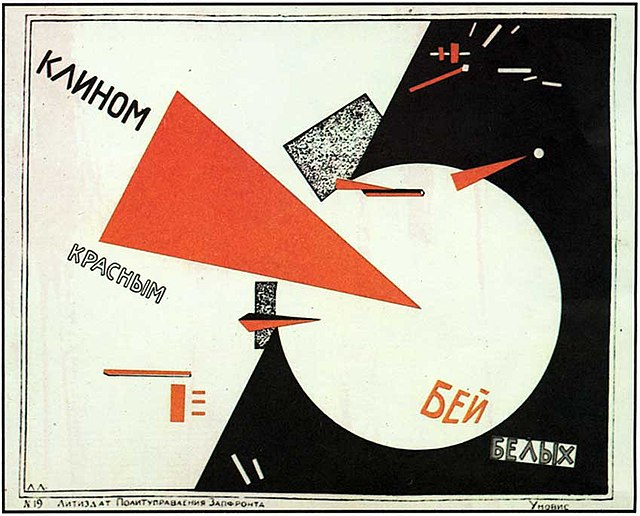

Дом Наркомфина
Дом Наркомфина переходного типа (от «буржуазного дома» к «социалистической коммуне») хотя и содержал в себе ранее существовавшие «буржуазные» квартиры (ячейки K и 2F), был структурирован таким образом, чтобы облегчить переход индивида к полностью социализированной жизни (в ячейках F)

Конструктивизм (искусство)
Конструктивизм является одним из направлений русского и советского авангарда. В некоторых случаях конструктивизм рассматривают как одно из течений, определивших развитие Нового ви́дения и как источник различных форм интернационального стиля в архитектуре и графическом дизайне. В частности, русский конструктивизм считают основой таких явлений как Интернациональный типографический стиль и Швейцарская школа графики.